Projects
1. Design of Software-Defined Wireless Network for Machine Learning-Driven DDoS Detection and Tiered Response. (IEEE ISCIT 2025, Co-author) [View Publication ↗]
Architected a high-throughput log ingestion pipeline and load balancing infrastructure for real-time network security analytics.
Click for more details
github.com/knotnot/senior-project_server-module
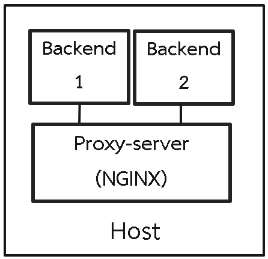
* Architecture diagram of server.
Objective:To build a resilient server environment capable of detecting and mitigating DDoS attacks through automated log analysis and machine learning.
Infrastructure & Pipeline:
Deployed Nginx as a Load Balancer on Ubuntu VMs. Developed a high-frequency ingestion pipeline that parses web traffic logs, extracting features like request volume and packet size every 5-second window.
Data Engineering for ML:
Engineered structured datasets from raw network traffic, performing real-time feature extraction to fuel an anomaly detection model. Loaded the processed data into a MySQL database for historical auditing.
Visualization & Response:
Integrated Power BI for interactive traffic visualization, allowing for manual oversight of network health alongside the automated 98% accuracy ML-driven tiered response system.
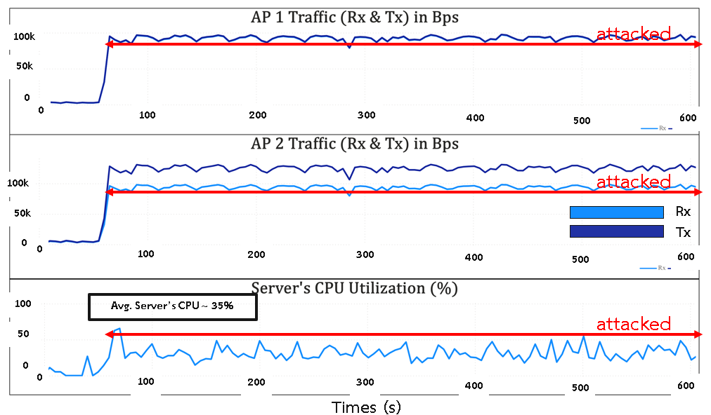
* Power BI dashboard showing request rate over time.
Outcome:
Successfully simulated real-world attack scenarios to validate the pipeline's stability. The system effectively blocked malicious IPs while maintaining 100% server uptime during stress tests.
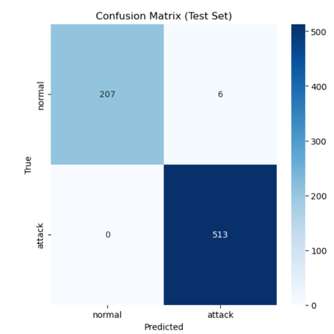
* Confusion matrix showing ML model performance.
2. IoT Data Pipeline for Plant Growth Analytics
Architected a scalable IoT network with 18 sensors to automate plant growth research data collection.
Click for more details
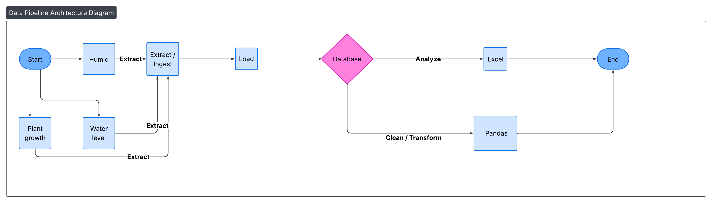
Integrated DHT22 (Humidity), Ultrasonic HC-SR04 (Plant Height), and Water Level Sensors with NodeMCU ESP-8266 boards. Programmed edge devices using C++/Arduino IDE for initial calibration and data validation.
Pipeline:
Established a real-time data ingestion flow to InfluxDB. Configured specialized Buckets and Tags for 18 distinct data points to ensure organized time-series storage and easy retrieval.
Challenge:
Faced unstable network connectivity in the lab environment, leading to potential data gaps.
Solution:
Optimized router placement for maximum signal stability and implemented Data Imputation techniques. Since plant growth variables change gradually, used neighboring data points to estimate and fill missing values, maintaining dataset integrity.
Result:
Automated the end-to-end lifecycle from sensor to Excel-based analytics and Pandas, enabling data-driven growth comparisons and professional visualization.
3. Multi-Source Trend & Asset Correlation Pipeline (GCP)
Architected an automated ELT pipeline on Google Cloud Platform to analyze real-time correlations between global news trends, Bitcoin prices, and Gold rates.
Click for more details
github.com/knotnot/gold-bitcoin-news-data
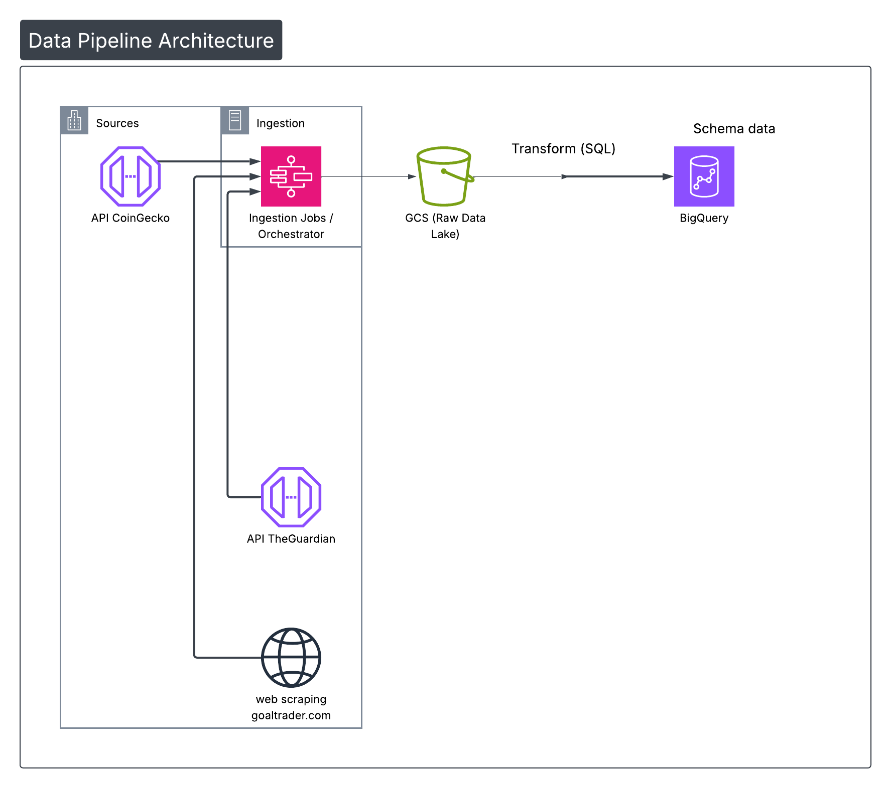
* Architecture diagram of the GCP-based data pipeline.
Objective:To gather data about real-time global news trends (The Guardian) impact the price volatility of Bitcoin (CoinGecko) and Gold (Goldtraders) for market correlation studies.
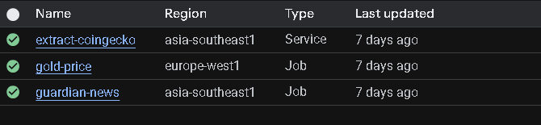
* Dashboard showing Cloud Run Job execution status.
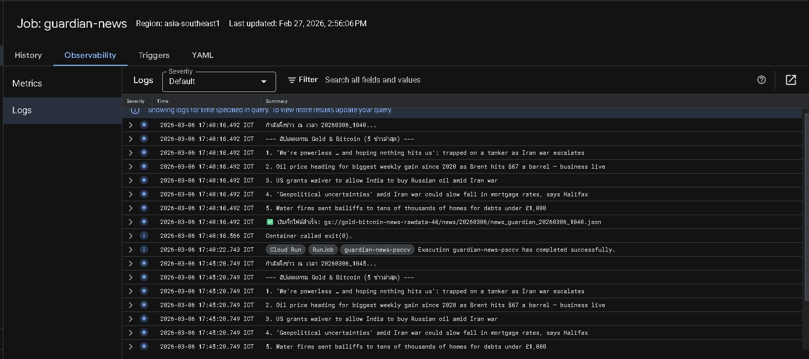
* Job logs for the The Guardian data extraction task.
Implementation:Developed a hybrid serverless architecture: Cloud Functions for lightweight API calls and Cloud Run Jobs for complex tasks. Orchestrated the entire workflow via Cloud Scheduler to trigger tasks every 5 minutes.
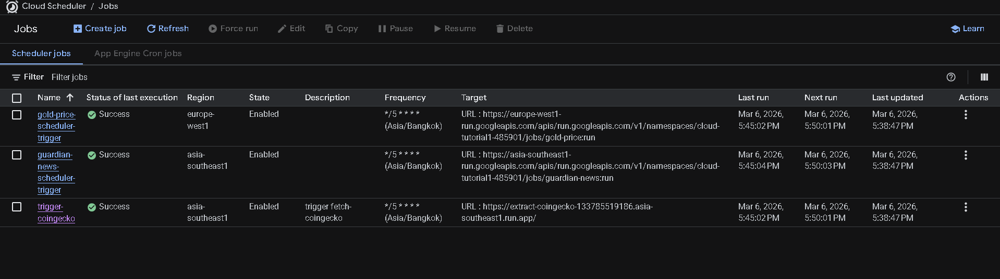
* Cloud Scheduler configuration for task execution.
Challenge:Handled dynamic web content by containerizing Selenium and Chrome Driver within Docker. Successfully deployed these containers to Cloud Run, overcoming the limitations of standard scraping libraries on serverless environments.
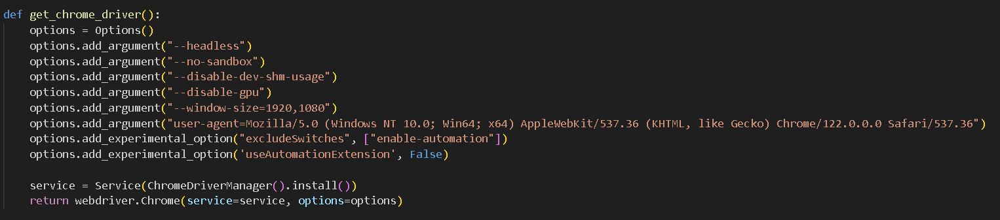
* Chrome Driver configuration in the Docker container.
Data Lifecycle:Adopted a Modern Data Stack approach: Storing raw JSON files in Google Cloud Storage (GCS) as a Data Lake. These datasets are integrated into BigQuery using a Unified Execution Timestamp as the Primary Key, enabling precise synchronization and time-series analysis across all data sources.
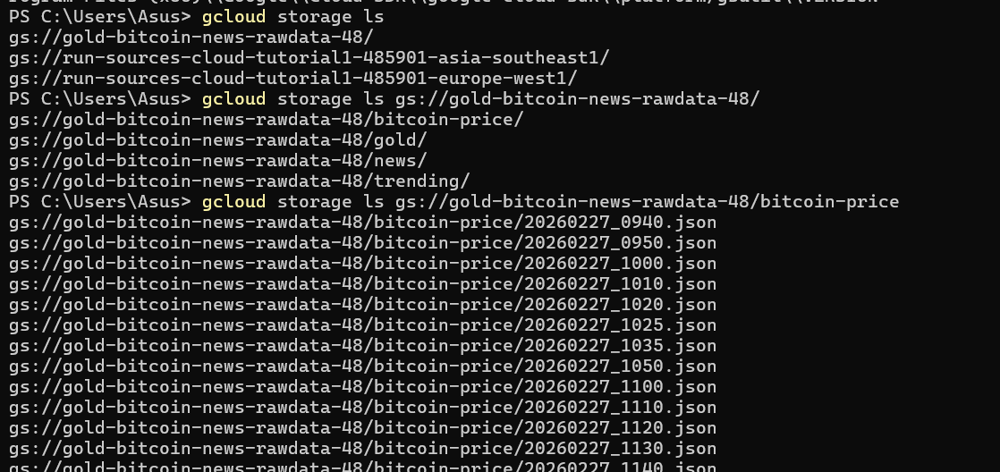
* Google Cloud Storage data overview.
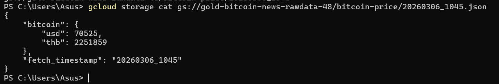
* Example raw data in Google Cloud Storage (json format).
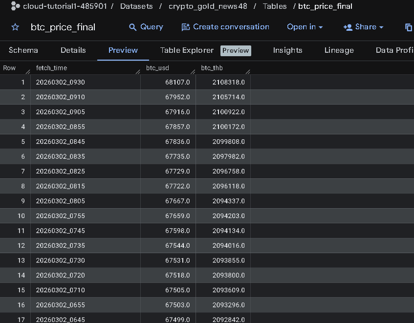
* Structure of BigQuery data for BTC price Using SQL.
Cost Management:Optimized resource allocation and execution time based on GCP documentation to stay within the Free Tier, ensuring a high-frequency pipeline with near-zero operational costs.
4. Airflow Automate Pipeline
Architected a robust local data orchestration system using Apache Airflow to capture and monitor search trends for travel destinations.
Click for more details
github.com/knotnot/ETL-data-pipeline
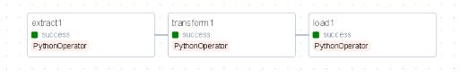
* Airflow DAG overview in the Airflow UI.
Objective:To automate the extraction of Top 5 trending travel destinations and store them systematically for historical trend analysis.
Implementation:
Utilized Apache Airflow running on Docker Compose to orchestrate the ETL workflow. Designed a DAG that triggers daily to fetch, process, and load search trend data.
Database Integration:
Configured a dedicated MySQL container to serve as the destination for the processed data. This ensures persistent storage and allows for efficient querying of historical top-ranked locations.
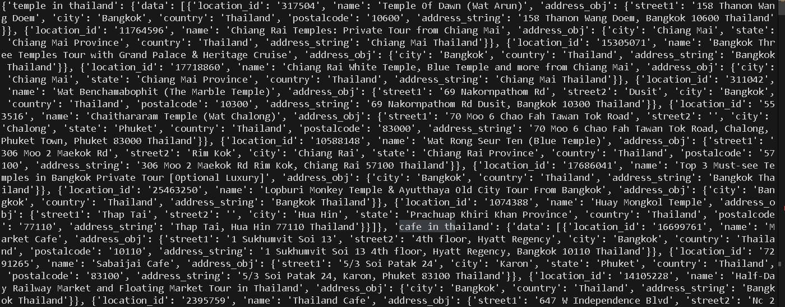
* Raw data in JSON format.
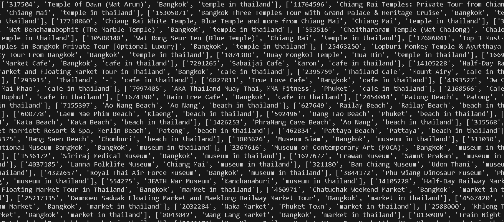
* Processed data in python dict format.
Solution:Implemented a custom Python-based operator within the Airflow DAG to handle data cleaning and schema validation before committing to the MySQL database.
Result:
Successfully automated the daily pipeline, providing a reliable and queryable data source to track seasonal travel trends without manual intervention.
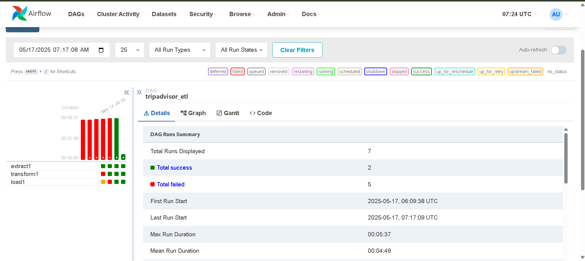
* Airflow DAG execution status showing successful runs.
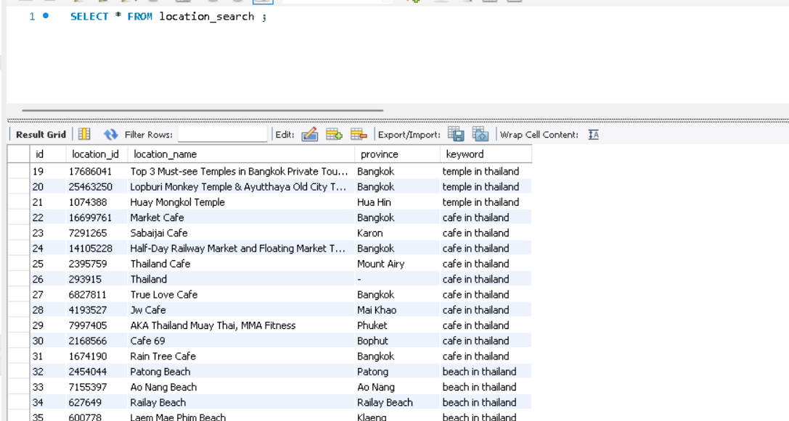
* MySQL database storage for processed data.